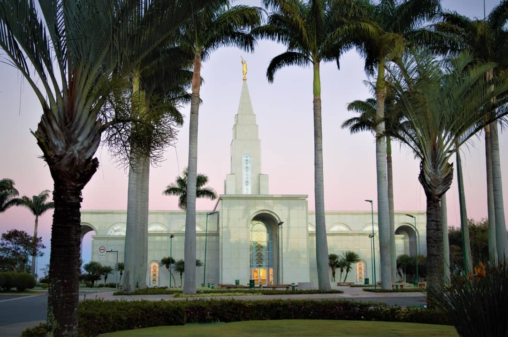
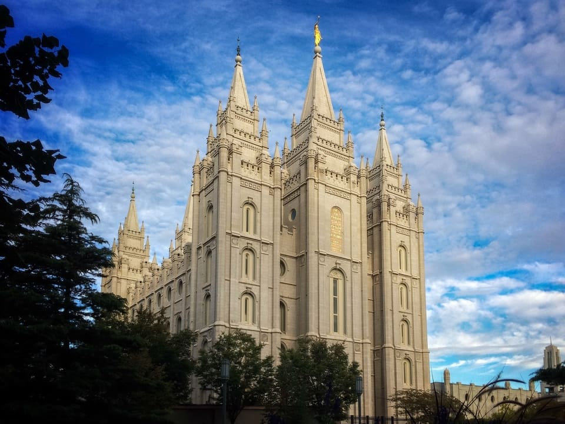
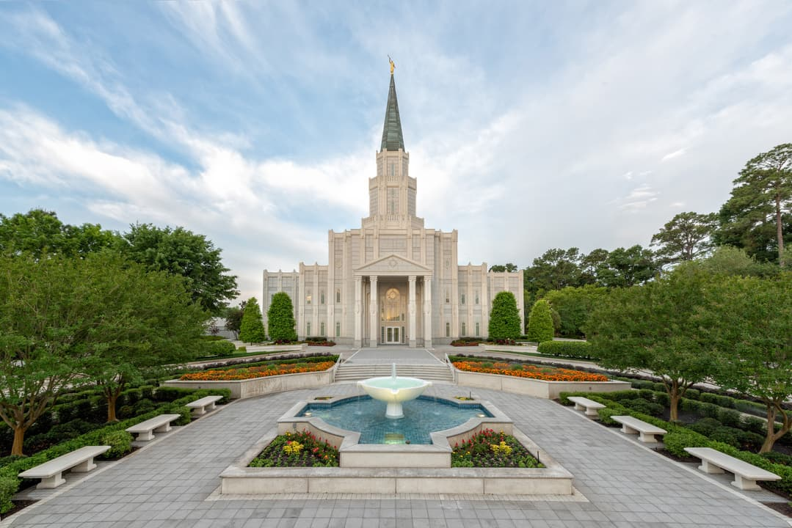

Álbum do templo
Home
Old
New
Large
Small
Página Inicial
Templo Curitiba Brasil

Templo Campinas Brasil
Templo Roma Italia
Templo Tokyo Japão

Templo Salt Lake Utah
Templo Laie Hawaii

Templo Houston Texas
Templo Syracuse Utah
Templo Washington D.C.